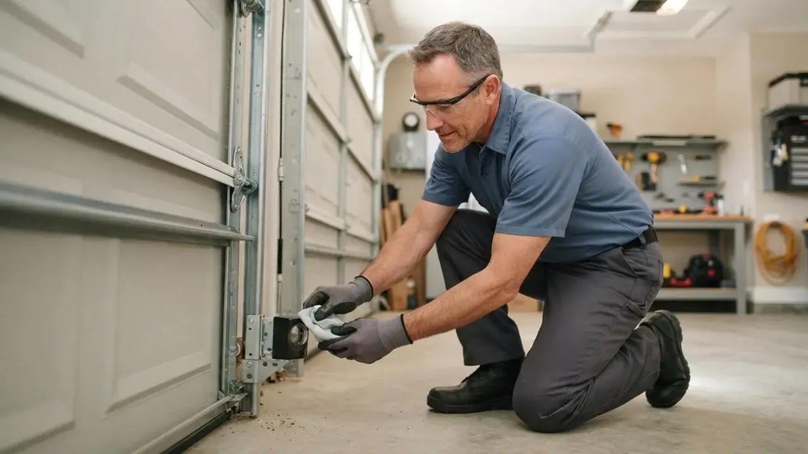

Same-day safety sensor fix for Hillsborough County homes
Garage Door Sensor Repair in Tampa That Gets Your Door Closing Again
Sensor repair in Tampa is what is needed when the door reverses halfway down or the opener light blinks ten times and quits. Photo eye sensor repair is called about daily, from misaligned brackets to chewed wiring. The techs carry LiftMaster and Genie replacement heads on the truck, so most jobs finish in one visit.
Live dispatcherUpfront optionsBacked workmanship
The basics
What Is Garage Door Sensor Repair?
The pair of photo-eye sensors near the floor stops the door from closing on a person, a pet, or an object, and sensor repair is the fix when they fail. A dirty sensor, one knocked out of alignment, or a broken wire leaves the door refusing to close, or closing and then reversing for no clear reason. A blinking opener light, a door that will not close from the remote, or sensors with no steady light all point to the same job: clean the lenses, realign the pair, check the wiring, and test the safety reverse so the door stops when the beam breaks.
What's included
What Our Sensor Repair Service Includes
Every sensor call starts with a full diagnostic, not a guess. Here is what is covered in a standard visit, and what is treated as an add-on when it is found.
Full Photo Eye Diagnostic
Both the sending and receiving eye are metered, voltage is checked at the opener terminals, and the full low-voltage wire run is inspected. That is how a dead eye is told from a loose wire from a failing logic board.
Alignment to UL 325
Each eye is set to the correct height and angle, and the beam is checked to trip the opener within two inches of the floor. That is the code standard, and the test is run before the truck leaves.
Sensor Replacement When Needed
When an eye has failed, a matching LiftMaster, Chamberlain, Genie, or Linear unit is installed and the wiring is re-spliced with dielectric grease and heat-shrink. Parts are on the truck.
Wire Repair and Sealing
Corroded, stapled, or rodent-chewed sensor wire is replaced or repaired. Every splice is sealed against Tampa humidity and salt air, a common cause of repeat failures here.
Safety Reverse Test
The beam is blocked and the door is confirmed to reverse, then the auto-reverse is tested on the bottom rubber seal. Both have to pass, and the tests are watched as they run.
Bracket and Hardware Tightening
Loose lag bolts and bent brackets are why sensors drift out of line. Mounting hardware is tightened or replaced so the alignment holds through the next storm season.
Service overview
What Garage Door Sensor Repair in Tampa Actually Fixes
Sensor repair in Tampa is the diagnostic and repair work that restores the two photo eye sensors flanking the door opening, the safety beam that tells the opener nothing is in the way. When that beam breaks, the opener refuses to close the door. The sending and receiving eyes are tested with a remote tester, voltage is checked at the terminals, low-voltage wiring is inspected for corrosion or staples, and the units are realigned or replaced. Most failures trace back to a bumped bracket, water intrusion, or a spider nest blocking the lens.
In Tampa, sensors take a beating from humidity, salt air near the bay, and afternoon thunderstorms that push water under the door. A single lightning strike nearby can fry the logic board inside one eye. This is a climate-specific failure pattern, not a generic one, seen in South Tampa, Davis Islands, and Bayshore Gardens more than anywhere else.

How we workWe verify the cause, compare realistic options, and confirm the repair before we leave.
The service timeline
How Our Sensor Repair Process Works
A sensor fix follows a set order, though the fault decides the details. Five steps carry it from the first call to the walkthrough.
Phone Triage
Two questions are asked: how many times does the opener light blink, and does the door close when the wall button is held. The answers show whether it is a sensor, a wire, or a logic board before the truck is loaded. About three minutes.
On-Site Diagnosis
The tech meters both eyes, checks the low-voltage wiring run from the opener head to each bracket, and looks for water tracks or insect nests in the lens. This is where the real fault is found. Fifteen to twenty minutes, and the price is told before work starts.
Alignment or Replacement
When the eyes are good, they are realigned with a sensor alignment tool and the brackets are locked down. When an eye is dead, it is swapped for a matching LiftMaster, Genie, or Chamberlain unit and the splice is re-run. Twenty to forty minutes depending on the wire run.
Safety Test
The beam is blocked with a piece of cardboard and the door is confirmed to reverse. Then the auto-reverse is tested on the bottom rubber seal. Both tests have to pass before the job is called done, and the result is shown.
Walkthrough
A plain-English rundown of what failed and what to watch for is given. When the wiring is old, that is said. When the opener is on its last legs, that is said too, without pushing a replacement that is not needed yet.
Tools & methods
Tools and Methods We Use
Sensor work is only as good as the gear behind it. These are the tools that let the job be done right the first time.
Garage door sensor alignment tool
The two photo eyes are set to matching height and angle, so the beam lines up on the first try instead of the fifth. That is the difference between a fix that holds and one that drifts.
Garage door opener remote tester
A sensor is confirmed actually transmitting, not just looking powered. That saves paying for a replacement eye when the real fault is upstream.
LiftMaster and Chamberlain photo eye kits
Replacement sensors matched to the opener ride on the van. Matching the brand avoids compatibility trouble and keeps the safety circuit within spec.
Dielectric grease and heat-shrink
Every wire splice gets sealed against Tampa humidity and salt air. That single step is why these sensor repairs outlast a cheap twist-and-tape job.
Digital multimeter
Voltage is read at the opener terminals and along the low-voltage run. That is how a dead eye is told from a broken wire from a failing logic board.
Garage door track bender
A bent track dragging the door and knocking sensor brackets out of line gets straightened. Fixing the track is often what makes the alignment stick.
Use cases
When to Call for Sensor Repair
Sensor calls in Tampa follow a few familiar patterns. These are two recent ones, and how each was handled.

Storm-Killed Sensors in New Tampa
After a July storm, both photo eyes were dark and the opener blinked ten times. The wire run also showed corrosion at two splices near the garage floor. Both sensors were replaced with matching Chamberlain units, the corroded section was re-run, and every splice was sealed.
Trapped Car in South Tampa
A snapped cable dropped the door off level on a Sunday morning, dragging one sensor bracket out of alignment. The car was trapped inside and the owner had a flight that afternoon. The cable was replaced, the door was re-levelled, both eyes were realigned to UL 325, and the reverse was tested twice.
Problems we solve
Sensor Problems We Solve Across Tampa
Most sensor calls fall into a handful of patterns. Here is what is seen and how it is fixed.
Door reverses halfway down for no visible reason
Both eyes are metered to find whether the beam is broken by debris, a misaligned bracket, or a dead receiving unit. Then they are realigned or replaced and the reverse test is run twice before we leave.
Opener light blinks ten times and nothing moves
Ten blinks almost always points to the sensor circuit, not the motor. The low-voltage run is traced from the opener head to each bracket, the break is found, and the eye is repaired or replaced.
One sensor LED is dark or flickering
The unit is tested with a remote tester, power is confirmed at the terminals, and the eye is replaced when dead. Every splice gets dielectric grease and heat-shrink so the fix survives Tampa humidity.
Sensors keep drifting out of alignment
Drift means something is moving the door or the bracket. A bent track, worn rollers, or a weak spring are checked, the root cause is corrected, and the sensor mounts are re-torqued.
Pricing process
What Sensor Repair Costs in Tampa
$95 - $320 depending on scope
Realign vs. replace
Good eyes with only the brackets moved put the job in the $95 to $150 range. One or both units dead means replacement parts and labour, pushing it to $180 to $320.
Wire run condition
A corroded or chewed low-voltage run adds labour, since the wire may need re-running from the opener head to the bracket. That takes longer than swapping a sensor head.
Sensor brand and model
LiftMaster and Chamberlain kits are common and kept in stock. Less common brands such as Marantec or Sommer may need a matched part ordered, which can add a day.
Cost factors at a glance
| Cost factor | What affects the price |
|---|---|
| Typical range on this page | $95 - $320 depending on scope |
| Realign vs. replace | Good eyes with only the brackets moved put the job in the $95 to $150 range. |
| Wire run condition | A corroded or chewed low-voltage run adds labour, since the wire may need re-running from the opener head to the bracket. |
| Sensor brand and model | LiftMaster and Chamberlain kits are common and kept in stock. |
Ranges are the ones stated on this page; you get a written estimate before work starts.
Customer reviews
What Tampa Customers Say
★★★★★
“Door would go down about a foot and pop back up. I figured the opener was shot. Their tech metered both eyes, found a spider nest in one lens and a bracket that had walked loose, and had it closing in under an hour. Charged me the realign price he quoted on the phone, not a new opener.”
★★★★★
“After that big storm in July our sensors just blinked and quit. They came out same day, replaced both photo eyes, and sealed the wire splices because we back up to a pond. Six months later, still solid. The walkthrough at the end was the part I appreciated most.”
★★★★★
“Car was trapped inside on a Sunday morning. Called at 8, tech was here by 10:30. Turned out a snapped cable had knocked the door off level and dragged the sensor bracket with it. They fixed the cable, realigned the eyes, and tested the reverse twice in front of me.”
Book with confidence
What to Look for Before You Book
Before you book a sensor repair, a few simple checks keep a small job from turning into a surprise bill.
- The licence number is asked for before work starts and matched to the name on the quote.
- Recent reviews get read for punctuality, pricing, and follow-up, not just the star rating.
- The price arrives in writing before work starts, parts and labour included, with an answer on what happens if more work is found once the door is open.
- Warranty cover for parts and work, and its length, comes in writing.
- A marked vehicle and a technician able to say who they are and which company sent them.
- The price should include a safety test and a walkthrough at the end, so the door is seen working before they leave.
How they work
How Garage Door Safety Sensors Actually Work
Safety sensors are a simple idea that saves lives. Two small units sit on either side of the garage opening, a few inches above the floor. One sends an invisible infrared beam across the opening, and the other receives it. As long as the beam is unbroken, the door can close. The moment anything breaks the beam, a child, a pet, a bike, or a box, the opener reverses the door. The system is required by law on every opener installed since 1993, and it is the main protection against the door closing on someone.
The sensors have indicator lights that tell you their state at a glance. A steady light on both units means the beam is aligned and the system is working. A blinking light means the beam is broken or the units are out of alignment. No light at all usually means no power, a loose wire, or a dead sensor. Knowing what the lights mean helps you describe the fault when you call, and it helps the technician find it faster when they arrive.
- Sender and receiver: one unit sends an infrared beam across the opening, the other receives it.
- Beam broken, door reverses: anything breaking the beam makes a closing door reverse.
- Steady lights: both lights steady means the beam is aligned and the system is working.
- Blinking light: the beam is broken or the units are out of alignment.
- No light: usually no power, a loose wire, or a dead sensor.
Common mistakes
Common Mistakes We See on DIY Sensor Fixes
Sensors look easy to fix, and many homeowners try, but there are mistakes that make the problem worse. The first is forcing the sensor brackets to bend them into alignment, which cracks the bracket or the sensor housing and turns a realignment into a replacement. The second is cleaning the lenses with a harsh chemical or a rough cloth, which scratches the lens and weakens the beam. The third is taping or wedging the sensors into position, which works for a day and fails the next, and which hides the real problem, which is often a loose bracket or a bent track.
The most dangerous mistake is bypassing the sensors altogether. Some guides suggest wiring around the sensors so the door will close without them. That removes the only protection against the door closing on a child or a pet, and it is not a fix. If the sensors cannot be aligned, the cause is usually a bent bracket, a loose wire, or a failing sensor, and all of those are quick jobs for a technician. A door that only works with the sensors bypassed is a door that is not safe to use.
- Forcing the brackets: bending them cracks the bracket or the sensor housing.
- Harsh cleaning: chemicals and rough cloths scratch the lens and weaken the beam.
- Taping them in place: works for a day, fails the next, and hides the real problem.
- Bypassing the sensors: wiring around them removes the only protection against the door closing on someone.
- Ignoring the cause: a sensor that will not align usually has a bent bracket, a loose wire, or a failing unit.

Why is my garage door sensor blinking in Tampa?
A blinking sensor in Tampa almost always means the beam is blocked or one eye has lost power. Check for a spider web, a leaf, or a bumped bracket first. If the lens is clear and the brackets are straight, the eye itself has likely failed from humidity or a nearby lightning strike. We meter both units and tell you which one is dead.
How much does garage door sensor repair cost in Tampa?
Typical 2026 pricing in Tampa runs $95 to $150 for a realign and $180 to $320 for a full sensor replacement with new wiring. Cost climbs if the low-voltage run is damaged inside a wall or if the opener logic board also failed. We quote the number on site before any work starts.
How do I align garage door sensors in Tampa?
Loosen the wing nut on each bracket, aim both eyes at each other at the same height, and tighten once the LED on the receiving unit goes solid. The catch is height: UL 325 wants the beam no more than six inches off the floor. Most homeowners set them too high, and the door still reverses on a toy.
Who repairs garage door sensors in Tampa?
We do. We are a garage door contractor (licence number available on request) working Hillsborough County, from South Tampa to New Tampa and out to Brandon and Riverview. We carry LiftMaster, Genie, and Chamberlain sensor kits on the truck, so most repairs finish the same day you call.
Why does my garage door close and then open again in Tampa?
The most common cause is the safety sensors. If the beam is broken by dirt, a spider web, a misaligned sensor, or something in the doorway, the opener reverses the door as a safety measure. Sunlight shining directly into a sensor can also confuse it, which happens more in the afternoon. Cleaning the lenses and checking that both sensors show a steady light fixes many cases, but if the wiring is damaged, a technician should repair it.
How do I clean my garage door sensors in Tampa?
Wipe each lens gently with a soft, dry cloth, and remove cobwebs and dirt from around the sensor brackets. Do not use harsh cleaners or a pressure washer on them. After cleaning, check that both sensors show a steady light, then test the door. If the light still blinks or the door still reverses, the sensors may be out of alignment or the wiring may be damaged, and a technician should take a look.
Can garage door sensors be replaced without replacing the opener in Tampa?
Yes, in most cases. Replacement sensors can be fitted to your existing opener as long as the opener is a compatible brand and the wiring is sound. The technician fits the new pair, aligns them, and tests the safety reverse several times. If the opener is very old and the sensors are no longer made for it, the technician will tell you before ordering parts.
Why does my garage door reverse for no reason?
The most common cause is a safety sensor that is slightly out of alignment, so the beam breaks intermittently, often when sunlight hits the sensor at a certain angle. It can also be a dirty lens, a loose wire, or a force setting that is too sensitive. The technician checks the sensor lights first: a blinking light means the beam is broken or misaligned, and the alignment is corrected before anything is replaced.
Can I clean my garage door sensors myself?
Yes. Wipe the lenses gently with a soft, dry cloth to remove dust and cobwebs, and check that nothing is blocking the beam, such as a stored box or a hanging item. Do not use harsh chemicals or a rough cloth, because they can scratch the lens. If cleaning does not fix the problem, the sensors are likely out of alignment or the wiring is loose, and a technician can sort it quickly.
How high should garage door safety sensors be mounted?
Safety sensors should be mounted no more than 6 inches above the floor, on either side of the opening. That height is set by safety standards, because it is low enough to detect a small child or a pet. Sensors mounted higher can miss a child crawling under the beam. If your sensors are mounted too high, they should be lowered, and the technician will do that as part of a repair visit.
Related services
Related Services

Garage Door Repair
When a sensor fault turns out to be a symptom of a bigger problem, general garage door repair in Tampa covers the full system: springs, cables, tracks, and panels. The whole door is diagnosed so the same visit is not paid for twice.
Garage Door Spring Repair
A broken torsion spring can drop the door unevenly and knock a sensor bracket out of line. Torsion and extension springs are replaced, then the door is re-levelled so the photo eyes stay aligned. Winding bars and torque wrench on every job.
Garage Door Opener Repair
When the opener runs but the door will not lift, or the light blinks and nothing moves, the fault may be in the logic board rather than the sensor. LiftMaster, Chamberlain, Genie, and Craftsman openers are repaired and the sensor circuit is tested afterward.Ready when you are
Get Your Garage Door Sensor Repair in Tampa Today
One call and one visit, and the door closes again. A garage door contractor serving Hillsborough County with same-day and 24/7 dispatch, licence number available on request. Say how many times the opener light blinks and the likely meaning comes back.

Talk with the local team
Request Garage Door Sensor Repair
Call, text or email and a real person answers, day or night. Tell us what the door is doing and we will give you a price range on the spot plus the soonest arrival window. Most calls placed before mid-afternoon get a same-day visit anywhere in Hillsborough County.